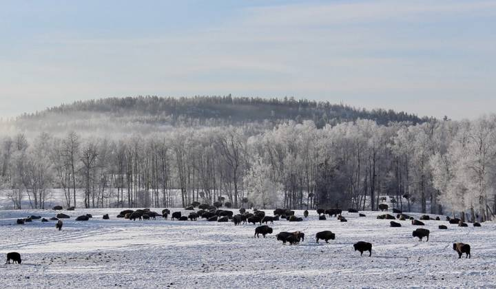
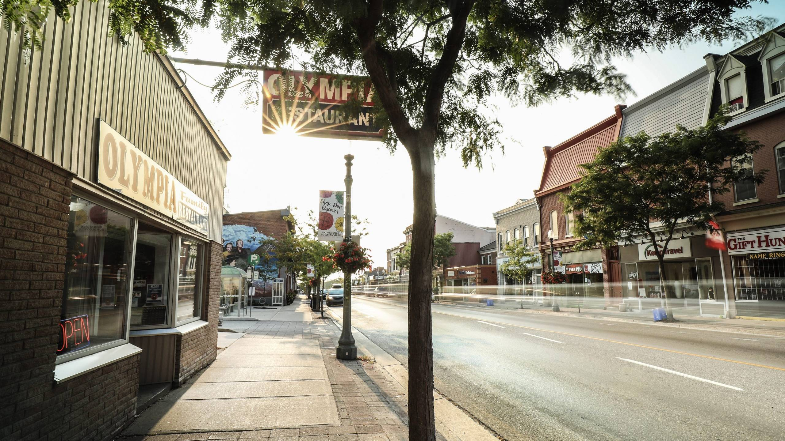
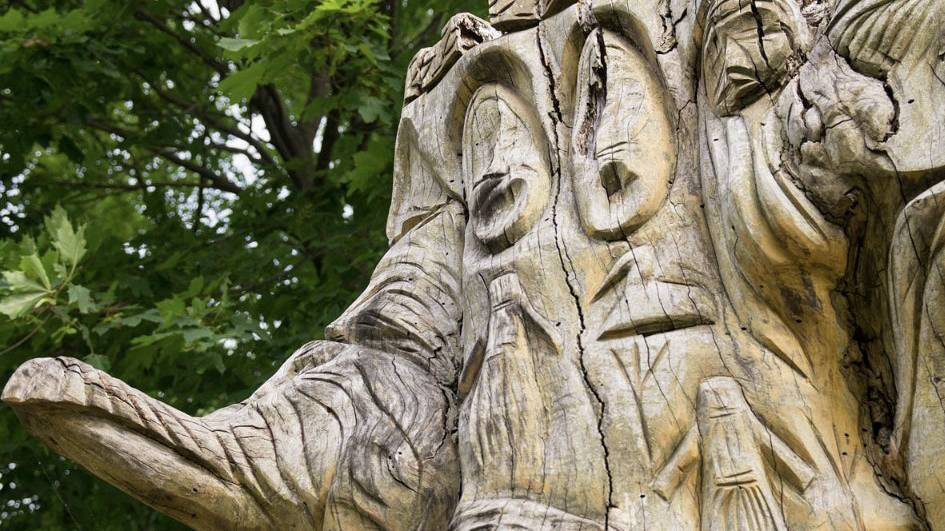
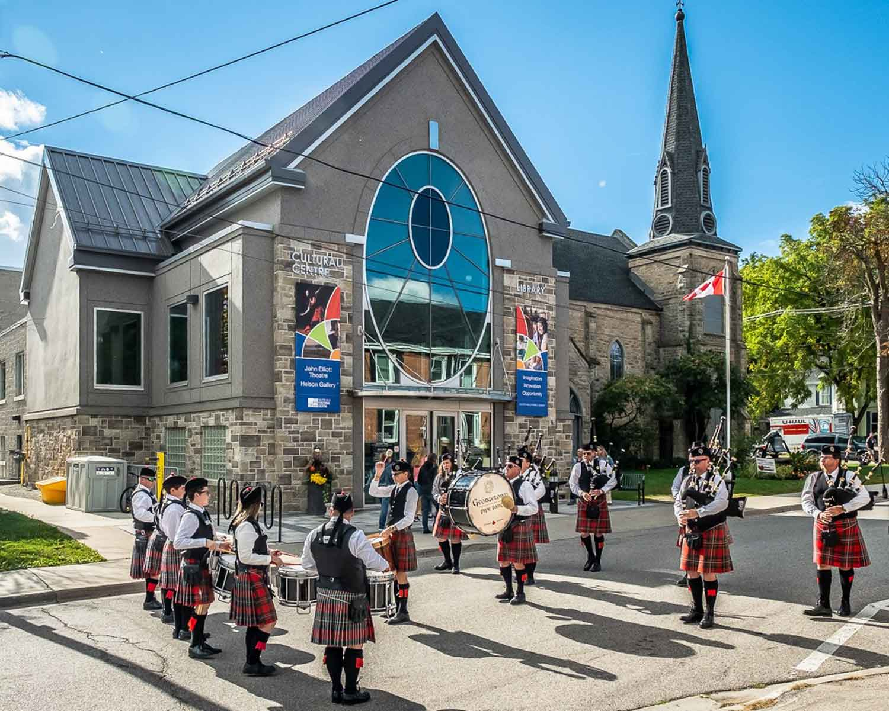
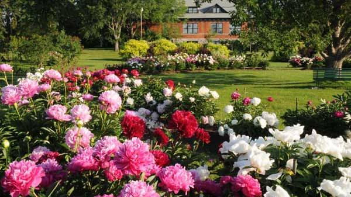

Stunning landscape meets unique history in Thunder Bay. On the shores of Lake Superior, the city is an amalgamation of Fort William and Port Arthur and boasts the largest Finnish population per capita outside of Finland. Clues to the earliest inhabitants - stone tools, spear points - point to a 10,000-year history. On the traditional territory of the Anishinabek, the nearby Fort William First Nation is a hub for Northwestern Ontario Indigenous communities.
Rocky Canadian shield, vast lakes, majestic forests - welcome to Ontario's north. Indigenous peoples have inhabited these lands for centuries and Lake Temiskaming, at the headwaters of the Ottawa River, makes it an historic region for transportation and trade. Then there's the extraordinary history of Cobalt's silver rush in 1903, resulting in headlines around the world. No wonder the region provided inspiration for artists like the Group of Seven.
Durham Region South is conveniently located a stone's throw from Toronto and offers day-tripping possibilities galore. The region hugs Lake Ontario from Bowmanville to Pickering, making it easy to skip from location to location — and savour lakeside vistas. The lake and the land have held significance for centuries, as the Mississaugas, a branch of the Ojibwa Nation, moved into region circa 1700.
From lake to lake — Scugog to Simcoe — Durham Region North is a rural Ontario destination known for rolling farmlands, charming towns, and the Oak Ridges Moraine, one of the most important formations in Ontario’s greenbelt. All that, plus a vibrant arts and cultural scene.
Halton Hills is a community of towns, hamlets and villages that occupy an area along the Niagara Escarpment, with the Credit River winding its way through the forests, plains, and marshes. The abundant natural beauty and small-town charm have captured the hearts of artists, encouraging many of them to call this place home.
The nation's capital is known for its impressive “big-ticket” possibilities: Parliament Hill, international festivals, nationally significant museums. Ottawa residents are proud to lay claim to the world's longest skating rink and largest Tulip Festival. But they also love to just walk, shop, and enjoy their city - and so can you.
It's not often you'll find a farm in a city. But the Central Experimental Farm (locals just call it the Experimental Farm) is only a few kilometres from downtown. It's no hobby farm, not at 426 hectares. Established in 1886, the farm has made significant contributions to Canadian agriculture, including developing the world-famous frost-resistant Marquis wheat. Take a deep dive into Canada's agricultural heritage at the Canadian Agricultural and Food Museum. Or, just talk to the animals. The museum is home to cows, alpacas, pigs, horses, goats and more.